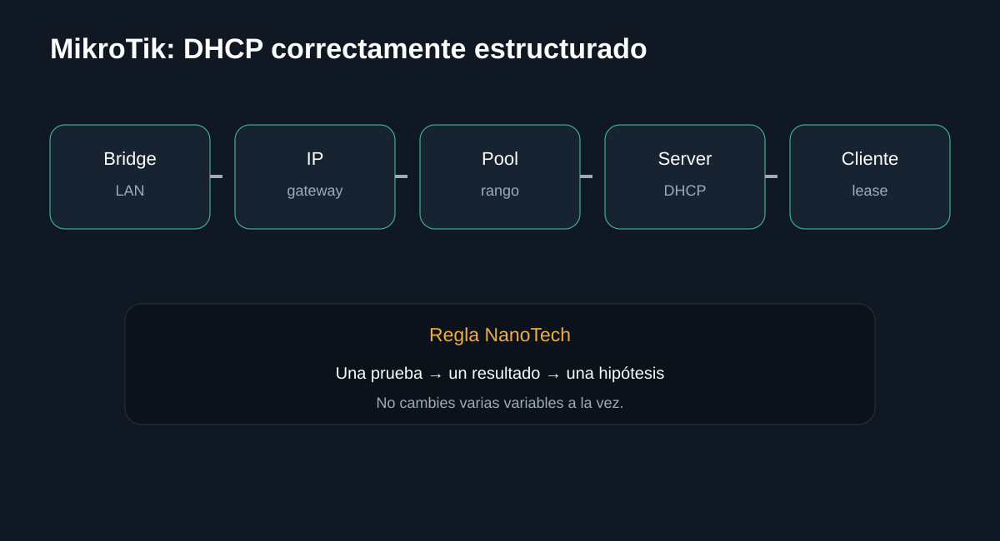

Introducción

Cómo separar enlace, DHCP, gateway y cliente antes de tocar NAT o DNS. La guía busca que puedas separar causas antes de sustituir componentes.
Antes de empezar: seguridad
Desconecta el equipo cuando corresponda y no realices mediciones peligrosas sin formación e instrumental. En baterías, fuentes y placas, detén el procedimiento si detectas daño físico, líquido, olor extraño o calor anormal.
- Documenta el estado inicial.
- Haz una sola modificación cada vez.
- Conserva tornillos, cables y configuración original.
Herramientas
1. Confirmar enlace
El puerto o Wi‑Fi debe estar asociado antes de revisar DHCP.

/interface print detail
/interface ethernet monitor ether1 once/interface ethernet monitor ether1 onceLista todas las interfaces fisicas y virtuales con su estado. Busca una "R" junto al nombre: significa "running" (activa). Si falta, la interfaz esta caida o deshabilitada. Revisa el estado fisico del puerto Ethernet (enlace, velocidad, duplex) al instante, sin esperar eventos. Si ves "status: link-ok", el cable y el otro extremo estan bien conectados; "no-link" apunta a un problema fisico (cable, puerto o equipo apagado).
2. Revisar DHCP
RouterOS puede entregar IP, máscara, gateway y DNS a los clientes mediante DHCP.

/ip dhcp-client print detail
/ip dhcp-server print detail
/ip dhcp-server lease print detail/ip dhcp-server lease print detailMuestra si el propio router esta recibiendo IP por DHCP en su interfaz WAN (tipico al conectarse a un modem/ISP). "status: bound" significa que ya obtuvo IP, gateway y DNS del proveedor; cualquier otro estado indica que el router no ha logrado conectarse. Lista las direcciones IP actualmente entregadas a clientes (leases). Si el equipo del cliente aparece con estado "bound", el DHCP esta funcionando de punta a punta.
3. Probar gateway
Una IP válida no garantiza que el cliente alcance el router.

/ping 192.168.88.1 count=5/ip address print detailPrueba de conectividad hacia el propio router/gateway desde un cliente de la LAN. Si no responde, el problema esta en la red local -cableado, bridge o IP-, no en Internet. Lista las direcciones IP asignadas a cada interfaz. Confirma que la IP se creo correctamente y que no choca con otra direccion ya existente en la red.
Qué hacer
- Haz ping al gateway desde el cliente.
- Si falla, revisa VLAN/bridge, máscara y aislamiento.
- No cambies NAT todavía.
Registra el resultado antes de continuar.
InterpretaciónUna IP válida no garantiza que el cliente alcance el router.
4. Probar salida por IP
Separa conectividad IP de resolución DNS.

/ping 1.1.1.1 count=5
/ip route print detail/ip route print detailPrueba de conectividad hacia Internet usando una IP publica conocida (Cloudflare), sin depender del DNS. Si responde con 0% de perdida, el problema NO es de ruteo o de Internet, sino probablemente de DNS. Lista las rutas que el router conoce. Para salir a Internet debe existir una ruta "0.0.0.0/0" (ruta por defecto); si no aparece, el router no sabe hacia donde mandar el trafico que no es de su propia red.
Qué hacer
- Haz ping a una IP pública.
- Si funciona pero un dominio no, pasa al diagnóstico DNS.
- Si falla, revisa ruta por defecto y WAN.
Registra el resultado antes de continuar.
InterpretaciónSepara conectividad IP de resolución DNS.
5. Revisar DNS
DNS convierte nombres de dominio en direcciones IP.

/resolve example.com
/ip dns print/ip dns printPide al router que resuelva un nombre de dominio a una direccion IP usando el DNS configurado. Si esto falla pero el ping por IP funciona, el problema es especificamente de DNS, no de conectividad. Muestra los servidores DNS configurados en el router y si tiene habilitado el modo "allow-remote-requests" para servir de DNS a los clientes.
Qué hacer
- Comprueba servidores DNS configurados.
- Verifica si el router puede resolver nombres.
- Si el router actúa como caché para clientes, revisa allow-remote-requests y firewall.
Registra el resultado antes de continuar.
InterpretaciónDNS convierte nombres de dominio en direcciones IP.
Diagnóstico final
Fuentes y notas
Basado en la documentación oficial de RouterOS sobre DHCP y DNS. RouterOS documenta DHCP como cliente/servidor y el uso del router como caché DNS cuando se habilita. Véase la documentación oficial de MikroTik.